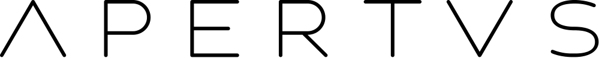

Project Face Off
AI personas that simulate A/B tests for marketing designs in seconds. Started as my internship prototype at Adobe Research and voted best Sneak at Adobe Summit 2026.
MSc Computer Science · ETH Zurich
smarian [at] ethz [dot] ch
I'm a Master's student in Computer Science at ETH Zurich. My research interests lie in post-training for large language models, in particular reinforcement learning and self-improvement. I work on LLM post-training at the ETH AI Center, where I contributed to the open-source model Apertus, but am currently interning at QuantCo as an AI Engineer Intern. Previous experience includes research assistantships in Prof. Andreas Krause's group, Prof. Leif Kobbelt's group, and internships at Optiver and Adobe Research.

Under review · US Patent
* Equal contribution
AI Engineer Intern · QuantCo
Software Engineer Intern · Optiver
Data pipelines for pricing research in the Pricing Quantitative Research team.
Research Assistant · ETH AI Center, Learning & Adaptive Systems Group
LLM post-training for Apertus and active learning for preference data generation.
Software Engineer Intern, Machine Learning · Adobe Research
LLM agents that simulate A/B tests for rapid design evaluation.
Research Assistant · RWTH Aachen University, Visual Computing Institute
3D mesh generation with graph neural networks and computer vision tools for museum curators.
MSc Computer Science · ETH Zurich
Major in Machine Intelligence, minor in Computer Graphics.
BSc Computer Science · RWTH Aachen University
Focus on machine learning and visual computing.
AI personas that simulate A/B tests for marketing designs in seconds. Started as my internship prototype at Adobe Research and voted best Sneak at Adobe Summit 2026.
Open-source tool that lets museum curators explore their collections with vision–language models fine-tuned on their own data.
Utility tool using locally hosted VLMs to support robust LaTeX parsing.